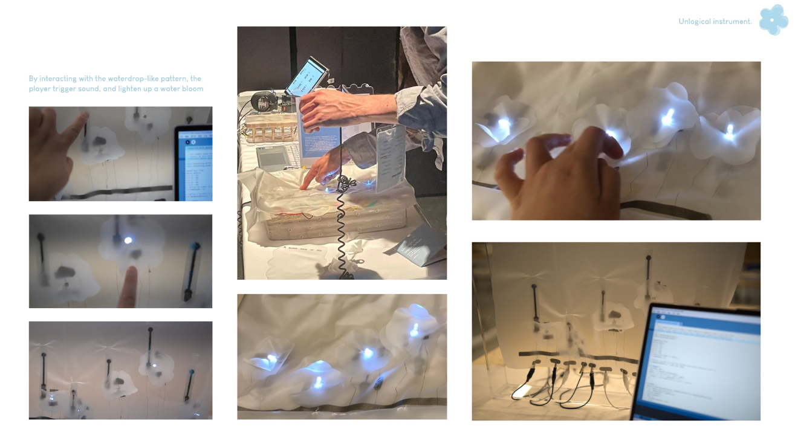
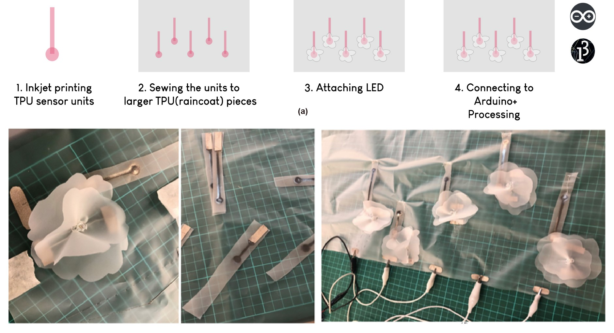
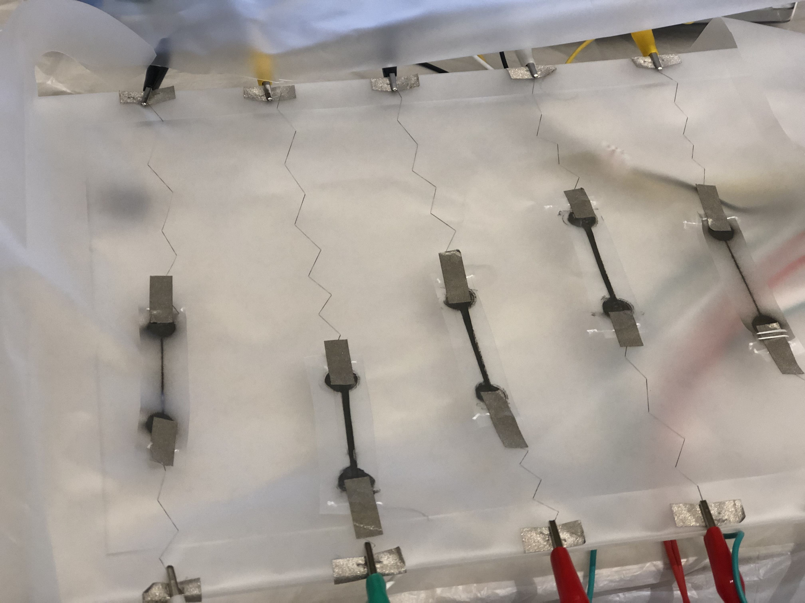
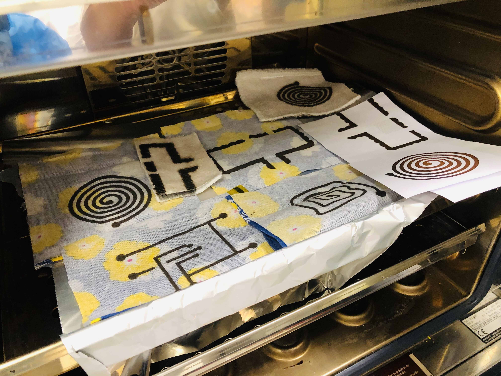
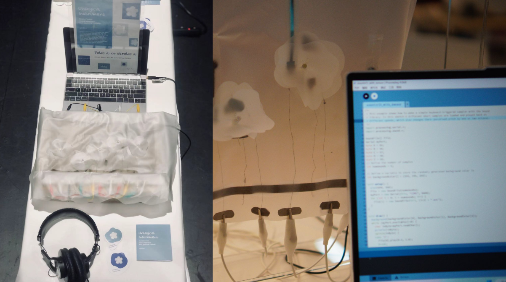
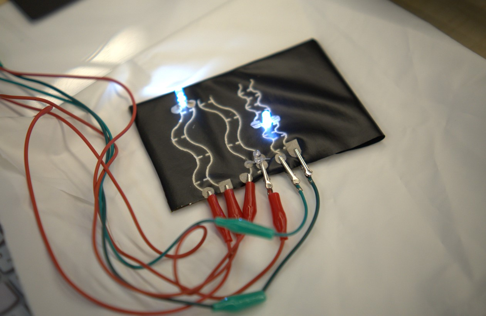
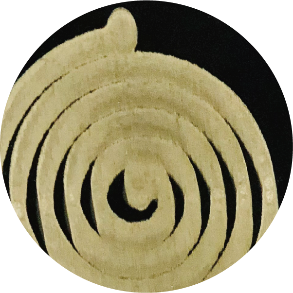
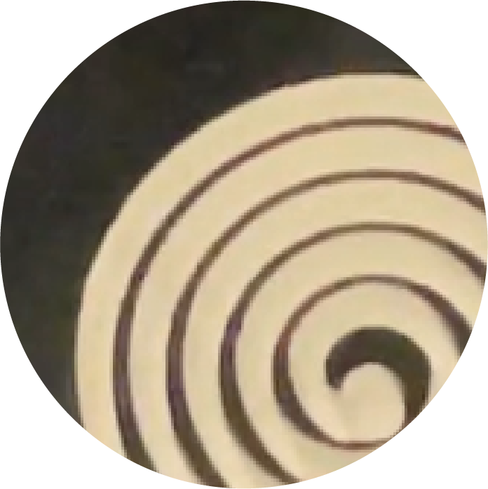

Unlogical Instrument
Please watch with sound :D
Video source: Bilibili
Unlogical Instrument is a series of sound making instruments. Unlogical is a statement about breaking the dogmatic approach of commonly used music making approaches. It introduces an interactive mechanism mediated by intuitive human gestures and the curiosity to explore tangible material.
Keywords: #Material-Driven-Design #smart textile #sensorial interaction #musical instruments #gestures #playability.
[01]

Publication and Exhibition
This project was exhibited in 2023 DIS ART GALLERY, also published in the proceedings of DIS 2023
Concept
Unlogical Instrument - 01 locates the focus on the textile. It's an artwork investigates the relationship between the gestures and the sound perception that originates from the textile through a material-driven approach. Inkjet printing is applied to transfer the original textile into a sensorial interface. The audience will listen to the sound while interacting with the textile surface, exploring and understanding this instrument through free-form playing.
.*
.* Peformance using the instrument


.*
TPU, poking, stroking, manufacturing process. Conductive ink on TPU fabric surface.


.*
Sound design in MaxMsp

[02]
Ongoing, using artificial leather with printed circuit, rub (contact) to make sound.



Some printings.